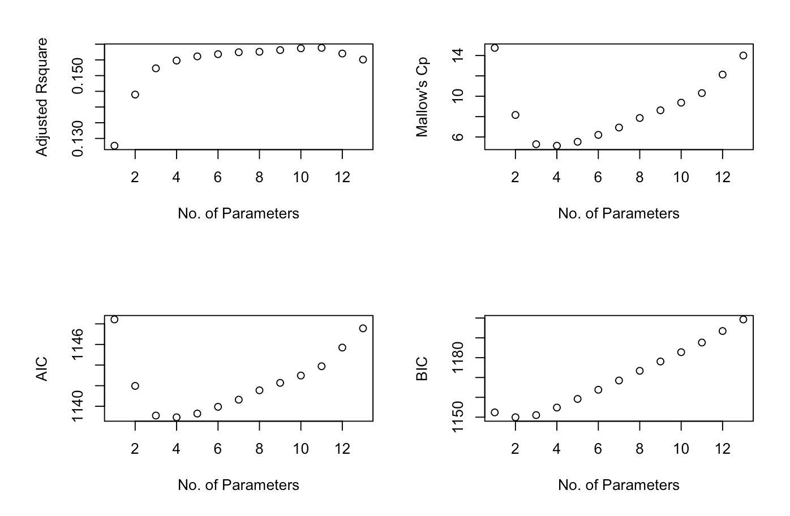

3.2 Subset Selection
The basic idea of subset selection is to score every candidate model by an information criterion that balances
\[\text{Training Error + Complexity Penalty}\]
and then to search for the model with the best score. For linear regression the complexity of a model increases with the number of predictors \(p\).
Training Error: an increasing function of \(RSS\).
Complexity Penalty: an increasing function of \(p\).
Why not simply use \(R^2\) or RSS? Both \(R^2\) and RSS improve (or at least never worsen) whenever a new variable is added, so they do not penalize the inclusion of irrelevant predictors.
3.2.1 Information Criteria
Akaike Information Criterion & Bayesian Information Criterion
\(AIC\) and \(BIC\) are defined as
\[\begin{align*} AIC &= -2\cdot loglik + 2\; p \\ BIC &= -2\cdot loglik + \log(n)\; p \end{align*}\] where \(p\) is the number of predictors in the model under consideration and \(\log\text{lik}\) is the maximized log-likelihood. For the normal-error linear model the first term reduces to \[-2 \cdot loglik = n\log \frac{RSS}{n} \] (up to an additive constant that does not affect model comparison). Consequently\[\begin{align*} AIC &= n\log \frac{RSS}{n} + 2\; p\\ BIC &= n\log \frac{RSS}{n} + \log(n)\; p \end{align*}\]
Lower values of AIC or BIC are preferred. When \(n\) is large, the penalty for an extra predictor is substantially heavier under BIC than under AIC; thus AIC tends to select larger models than BIC.
Adjusted-\(R^2\) for model with \(p\) predictors
\[\begin{align*} R^2_a & = 1-\frac{RSS/(n-p-1)}{TSS/(n-1)}\\ & = 1- (1-R^2)\Bigl(\frac{n-1}{n-p-1}\Bigr)\\ & = {\color{blue}{1-\frac{\hat{\sigma}^2}{\hat{\sigma}^2_0}}} \end{align*}\] where \(\hat{\sigma}^2\) is the residual variance estimate for the current model and \(\hat{\sigma}_0^2\) is the residual variance estimate for the intercept-only model.
Higher values of \(R^2_a\) are preferred.
Mallow’s \(C_p\)
\[C_p = \frac{RSS_{\mathbf{p}}}{\hat{\sigma}_0^2} +2p-n\]
where \(\hat{\sigma}_0^2\) is the residual variance estimate obtained from the full model. Mallows’ \(C_p\) behaves similarly to AIC; lower values are preferred.
Illustration of Complexity Criteria vs. \(p\)
The figure below shows how the adjusted \(R^2\), Mallows’ \(C_p\), AIC and BIC change with the number of predictors \(p\) for the student-grades data set introduced in the previous section.

Figure 3.1: Subset selection criteria vs. p.
3.2.2 Search Algorithms
With \(p\) available predictors there are \(2^p\) possible models. When \(p\) is modest we can evaluate all of them; when \(p\) is large we need systematic search strategies.
Level-wise search algorithms: These procedures return a globally optimal solution among all possible models and are practical for up to roughly 40 variables.
The idea is that they identify the \(m\) different models (default \(m=8\) in R) that have the smallest residual sum of squares, then score those models with the chosen information criterion. The algorithm need not examine every subset: if, for example, \(RSS(X_1,X_2)<RSS(X_3,X_4,X_5,X_6)\), then every size-2 or size-3 sub-model of \({X_3,X_4,X_5,X_6}\) can be safely skipped (“leaped over”).
Greedy algorithms: These algorithms add or remove predictors according to an information criterion (AIC, BIC, …). Three common variants are:
Backward elimination: start with the full model and successively delete the predictor whose removal most improves the criterion, until no further improvement is possible;
Forward selection: start with the null model and successively add the predictor that most improves the criterion;
Stepwise selection: at each step consider both adding and deleting a single predictor.
Greedy methods are computationally efficient but return only a locally optimal model; in practice this is usually satisfactory.
Some practical considerations
When \(p\gg n\) it is infeasible to begin with the full model. A common screening strategy is therefore:
Rank the \(p\) predictors by the absolute value of their marginal correlation with \(Y\).
Retain only the top \(K\) predictors (e.g., \(K=n/3\)).
Apply a stepwise procedure that is still allowed to re-introduce previously discarded variables.